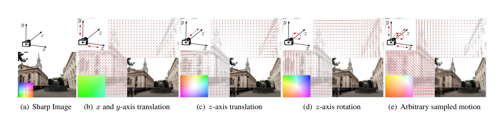
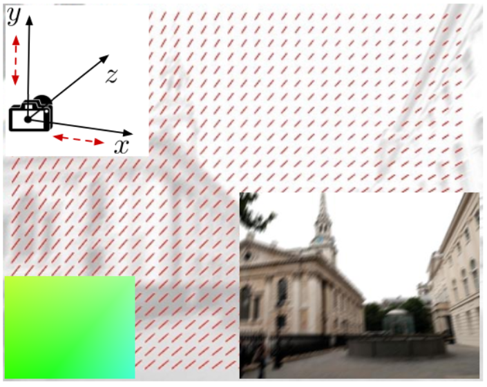
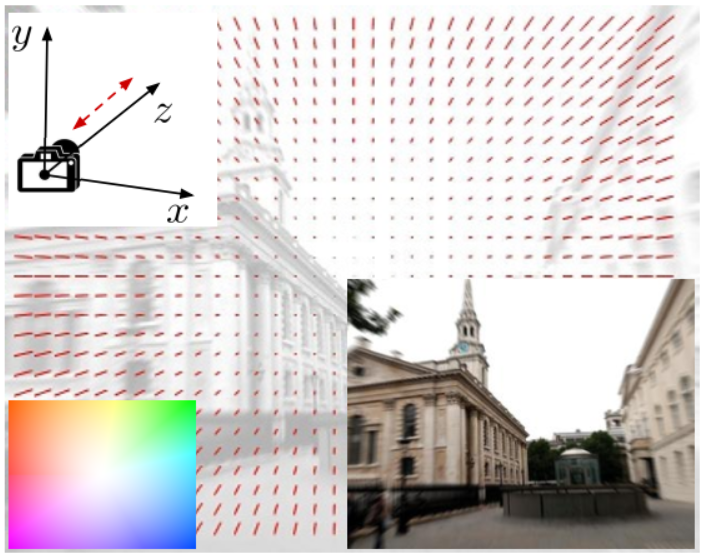
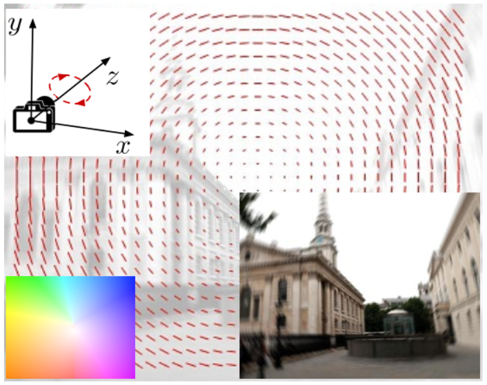

Simulation von Motion-Flow-Maps¶
Simulation von Motion-Flow-Maps zur Datengenerierung
Der Kern dieses Abschnitts besteht darin, einen Datensatz zu generieren, der realistische Unschärfemuster auf verschiedenen Bildern für das Training enthält. Obwohl zufällige Samples sehr unterschiedliche Trainingssamples erzeugen kann, da der realistische Motion Flow einige Eigenschaften wie die stückweise Glätte beibehält. So ist es das Ziel, eine Simulationsmethode zu schaffen, die Motion Flows erzeugen kann, die die natürlichen Eigenschaften der Bewegung in dem Prozess der Bilderstellung widerspiegelt. Obwohl die Objektbewegung in realen Bildern zu heterogenen Bewegungsunschärfen führen kann, simuliert diese Methode nur den Motion Flow durch Kamerabewegungen fürs Training des FCN. Trotzdem werden Daten, die von dieser Methode erzeugt wurden dem Machine-Learning-Modell auch eine gewisse Handhabung mit Objektbewegung verleihen.
Text in Stichpunkten:
Es soll ein Datensatz generiert werden, der realistische Unschärfemuster auf verschiedenen Bildern für das Training enthält
Es soll eine Simulationsmethode geschaffen werden, die Motion Flows erzeugen kann, die die natürlichen Eigenschaften der Bewegung in dem Prozess bei der Bilderstellung widerspiegelt.
Obwohl die Objektbewegung in realen Bildern zu heterogenen Bewegungsunschärfen führen kann, simuliert diese Methode nur den Motion Flow durch Kamerabewegungen fürs Training des FCN.
Trotzdem werden Daten, die von dieser Methode erzeugt wurden dem Machine-Learning-Modell auch eine gewisse Handhabung mit Objektbewegung verleihen.
Abbildung 5
Der Einfachheit halber wird ein 3D-Koordinatensystem generiert, wobei der Ursprung im optischen Zentrum der Kamera, die xy-Ebene auf die Ebene des Kamerasensors ausgerichtet ist und die z-Achse steht senkrecht zur xy-Ebene, wie in Abbildung 5 gezeigt. Da das Ziel der Motion Flow auf einem Bildraster ist, wird der simuliere Motion Flow , der auf ein 2D-Bild projiziert wird. Der simuliere Motion Flow wird direkt auf ein 2D-Bild projiziert, anstatt auf die 3D-Bewegungsbahn. In Anbetracht der Unklarheiten verursacht durch Drehungen um die x- und y-Achse, wird ein Motion Flow M durch Sampeling von vier additiven Komponenten simuliert:
Text in Stichpunkten:
Einfachheit halber wird ein 3D-Koordinatensystem generiert, wobei der Ursprung im optischen Zentrum der Kamera, die xy-Ebene auf die Ebene des Kamerasensors ausgerichtet ist
die z-Achse steht senkrecht zur xy-Ebene
Ziel der Motion Flow auf einem Bildraster ist, wird der simuliere Motion Flow , der auf ein 2D-Bild projiziert wird. Der simuliere Motion Flow wird direkt auf ein 2D-Bild projiziert, anstatt auf die 3D-Bewegungsbahn.
wobei \(M_{T_x}\), \(M_{T_y}\) und \(M_{T_z}\) die Motion Flows bezeichnet, die mit den Translationen entlang der \(x\)-, \(y\)- und \(z\)-Achse zusammenhängen. \(M_{R_z}\) repräsentiert die Bewegung aus der Rotation um die z Achse. Jedes Element wird wie folgt generieren.
Translation entlang der \(x\)- oder \(y\)-Achse
Als Beispiel beschreiben wir die Erzeugung von \(M_{T_x}\). Wir tasten zunächst ein zentrales Pixel \(p_{T_x}=(i_{T_x}, j_{T_x})\) auf der Bildebene ab, einen einfachen Bewegungswert \(t_{T_x}\) und einen Beschleunigungskoeffizienten \(r_{T_x}\). Dann
kann \(M_{T_x}=(U_{T_x}, V_{T_x})\) wie folgt generiert werden
\(U_{T_x}(i,j) = (i-i_{T_x})r_{T_x} + t_{T_x}, V_{T_x}(i,j) = 0\). \(M_{T_y}\) kann
auf ähnliche Weise erzeugt werden.
Text in Stichpunkten:
zentral abgetastetes Pixel als Referenzpunkt \(p_{T_x}=(i_{T_x}, j_{T_x})\)
Beschleunigungskoeffizienten \(r_{T_x}\) für die Beschleunigung der simulierten Bewegung
Bewegungswert \(t_{T_x}\) für die Weite der simulierten Bewegung
\(M_{T_x}=(U_{T_x}, V_{T_x})\) kann wie folgt generiert werden
\(M_{T_y}\) kann auf ähnliche Weise erzeugt werden mit \(U_{T_x}(i,j) = 0\)

Translation entlang der \(z\)-Achse
Die Translation entlang der z-Achse verursacht normalerweise ein radiales Bewegungsunschärfemuster in Richtung des Fluchtpunkts. Indem man den semantischen Kontext ignoriert und ein
einfaches radiales Muster annimmt, kann \(M_{T_z}\) durch \(U_{T_z}(i,j) = t_{T_z} d(i,j)^ζ (i-i_{T_z}), V_{T_z}(i,j) = t_{T_z} d(i,j)^ζ (j-j_{T_z})\) erzeugt werden, wobei
\(p_{T_z}\) einen abgetasteten Fluchtpunkt bezeichnet, \(d(i,j) = \|(i,j)-p_{T_z}\|_2\) ist der Abstand von einem beliebigen Pixel \((i,j)\) zum Fluchtpunkt, ζ und \(t_{T_z}\) werden verwendet, um die Form des radialen Musters zu steuern, welches die Bewegungsgeschwindigkeit widerspiegelt.
Text in Stichpunkten:
\(ζ , t_{T_z}\) steuern die Form des radialen Musters, welches die Bewegungsgeschwindigkeit widerspiegelt.
Ein abgetasteten Fluchtpunkt \(p_{T_z}\) bezeichnet
Der Abstand von einem beliebigen Pixel \((i,j)\) zum Fluchtpunkt: \(d(i,j) = \|(i,j)-p_{T_z}\|_2\)

Rotation um die z-Achse
Wir tasten zunächst ein Rotationszentrum \(p_{R_z}\) und eine Winkelgeschwindigkeit \(\omega\) ab, wobei \(\omega>0\) die Drehung im Uhrzeigersinn bezeichnet. Sei \(s(i,j)=2d(i,j)tan(\omega/2)\). Die Bewegungsgröße an jedem Pixel ist \(s(i,j)=2d(i,j)\tan(\omega/2)\). Indem \(\theta(i,j)=\text{atan}[(i-i_{R_z})/(j-j_{R_z})] \in [-\pi, \pi]\), Bewegungsvektor am Pixel \((i, j)\) kann als \(\theta(i,j)=\text{atan}[(i-i_{R_z})/(j-j_{R_z})] \in [-\pi, \pi]\) erzeugt werden; \(U_{R_z}(i,j) = s(i,j) \cos(\theta(i,j)-\pi/2), V_{R_z}(i,j) = s(i,j) \sin(\theta(i,j)-\pi/2)\).
Wir setzen einheitliche Prioritäten über alle Parameter, die der Motion-Flow-Simulation entsprechen, als \(\text{Uniform}(\alpha, \beta)\).
Hinweis: Die vier Komponenten werden in kontinuierlicher Domäne simuliert und werden dann als ganze Zahlen diskretisiert.
Text in Stichpunkten:
Rotationszentrum \(p_{R_z}\), ist das Zentrum der Drehbewegung
Winkelgeschwindigkeit \(\omega\), wird festgelegt und spiegelt die Geschwindigkeit der Drehung wider
\(\omega>0\) steht für die Drehung im Uhrzeigersinn
Die Bewegungsgröße an jedem Pixel ist \(s(i,j)=2d(i,j)tan(\omega/2)\), d.h. wie weit wird gedreht
Bewegungsvektor am Pixel \((i, j)\)
\(\theta(i,j)=\text{atan}[(i-i_{R_z})/(j-j_{R_z})] \in [-\pi, \pi]\) beinhaltet die Differenz vom aktuellen Pixel zum Rotationszentrum
\(M_{R_z}=(U_{R_z}, V_{R_z})\) kann wie folgt generiert werden

Erstellung vom Trainingsdatensatz
Es wurden 200 Trainingsbilder mit Größen um \(300\times 460\) aus dem Datensatz BSD500
als unser Bildersatz mit scharfen Bildern \(\{X^n\}\) verwendet. Wir simulieren dann unabhängig 10.000 Motionflow-Maps \(\{M^t\}\) mit Reichweiten von \(u_{max}=v_{max}=36\) und weisen jedem \(X^n\) 50 Motion Flow-Maps zu ohne Duplizierung. Die nicht verunschärften Bilder \(\{X^n\}\) mit
\(U(i,j)=0\) und \(V(i,j)=0\), \(\forall i,j\) werden zum Training verwendet.
Als Ergebnis haben wir einen Datensatz mit 10.200 Bewegungsunschärfe-MotionFlow-Paaren \(\{Y^t, M^t\}\) für das Training.
Text in Stichpunkten:
Verwendet wurden 200 Trainingsbilder mit Größen um \(300\times 460\) aus dem Datensatz BSD500
10.000 Motionflow-Maps \(\{M^t\}\) mit Reichweiten von \(u_{max}=v_{max}=36\) wurden geschätzt
Aus jedem \(X^n\) wurden 50 Motion Flow-Maps ohne Duplizierung simuliert
Insgesamt 10.200 Bewegungsunschärfe-MotionFlow-Paaren